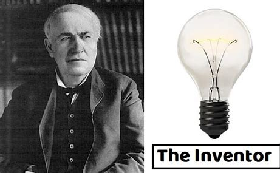

Thomas J Addison was born on September 17, 1917. Thomas Addison died at age 65 years old on July 11, 1983, and was buried at Calverton National Cemetery Section 10 Site 4741 210 Princeton Boulevard - Rt 25, in Calverton, New York. Family, friend, or fan, this family history biography is for you to remember Thomas Addison.
English physician after whom Addisons disease, a metabolic dysfunction caused by atrophy of the adrenal cortex, and Addison’s (pernicious) anemia were named. He was the first to correlate a set of disease symptoms with pathological changes in one of the endocrine glands. In 1837 Addison became a full physician at Guys Hospital, London, and a joint lecturer on medicine with Richard Bright, with whom he wrote Elements of the Practice of Medicine (1839). He gave a preliminary account in 1849 of the two diseases named after him and in 1855 wrote On the Constitutional and Local Effects of Disease of the Supra-Renal Capsules. He was author, with John Morgan, of An Essay on the Operation of Poisonous Agents upon the Living Body (1829), the first English book on the subject.
| Year | Award | Field |
|---|---|---|
| 1977 | Schelling received The Frank E. Seidman Distinguished | Political Economy |
| 1993 | Behavior Research Relevant to the Prevention of Nuclear War | Field of Coginitive |
| 2005 | Nobel Memorial Prize | Economic Sciences |